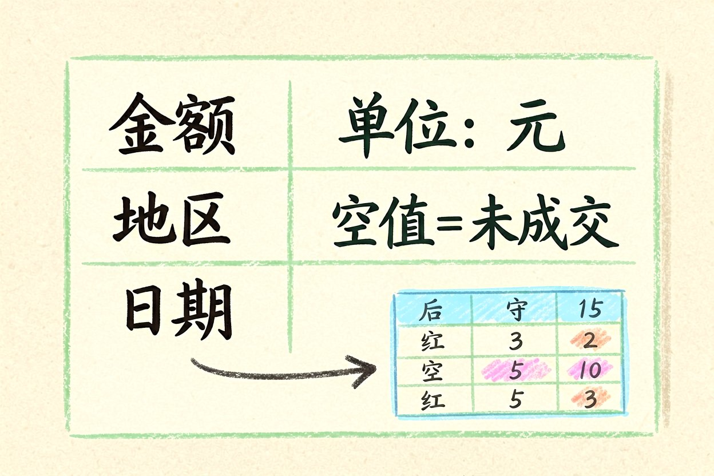
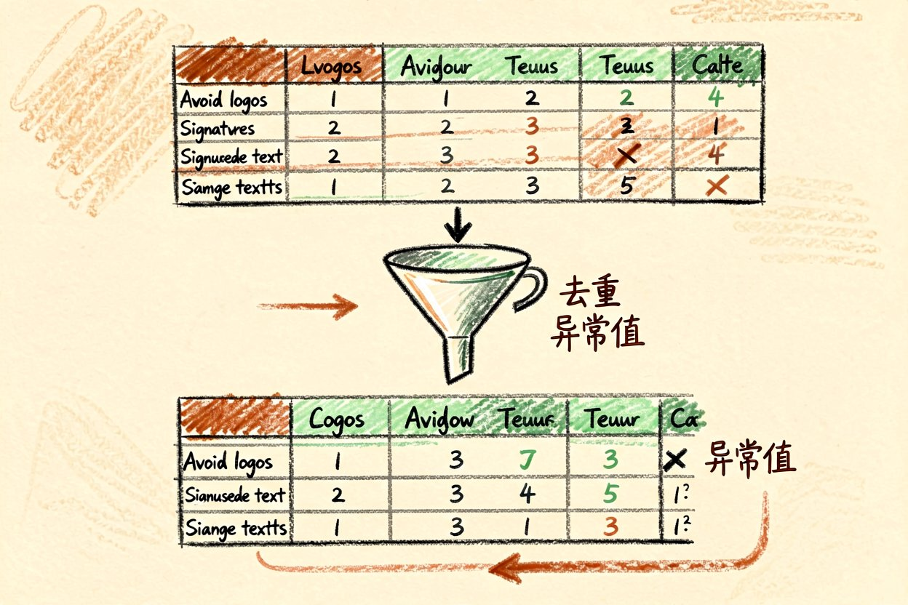
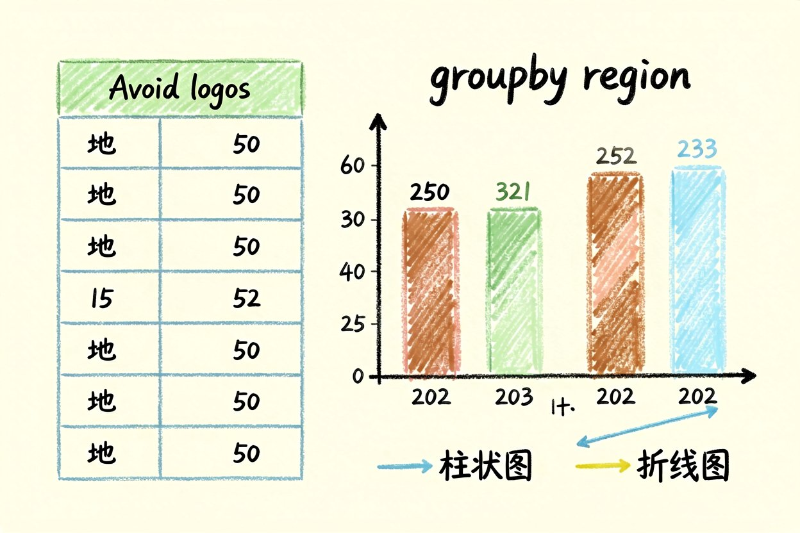
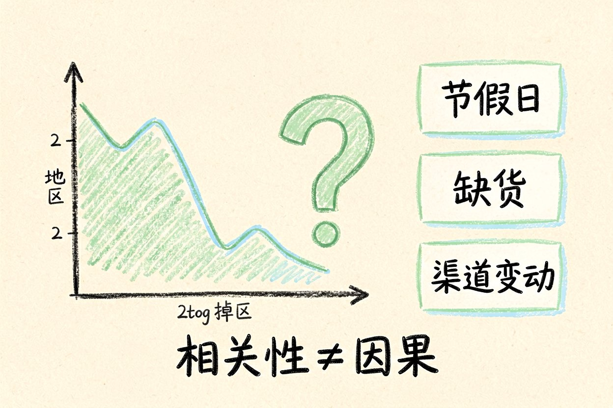
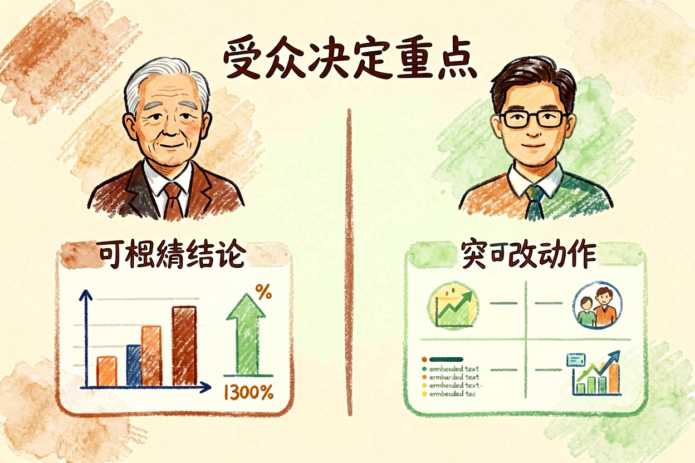

AI 数据分析实战：从脏表格到一张结论图
手里有一堆表格却看不出名堂？让 AI 帮你做数据清洗、分组和图表，几分钟出结论。
AI数据分析的舒服之处，是把重复劳动交给模型，你只管提问题和看结果。但方向错了，再快的出图也是白忙。下面用一份销售表走一遍，你会看到人和模型各自该干什么，以及哪一步绝不能甩手，免得结论看着漂亮其实歪了。
AI数据分析第一步：先把脏数据说清楚

模型最怕含糊。先把列名、单位、缺失值规则讲明白，比如"金额单位元，空值视为未成交"。说清前提，后面的分组才不会乱。很多人分析出错，不是模型不行，而是一开始就把"未填写"和"零"混为一谈，结论自然歪了。给模型一份数据字典，比口头解释十次都稳，它也不会擅自替你脑补缺失值。
脏数据先清再聚

脏数据不处理好，后面再漂亮的分组都是空中楼阁。先把重复行、异常值清掉，再让模型聚，省得它拿垃圾算出自信。这一步慢五分钟，后面少返工两小时，怎么算都值。很多人急着出图，跳了清洗，结果结论歪了还不知道哪一步错的，回头找更费劲。清洗规则写进提示词，比每次口头说更稳。
用分组快速看结构

把数据按地区汇总，一眼就能看出哪里卖得好。下面这段是核心逻辑，先聚再画，比直接丢全表给模型靠谱：
import pandas as pd
df = pd.read_csv("sales.csv")
summary = df.groupby("region")["amount"].sum()
print(summary)拿到这张表，再决定画柱状图还是折线图。分组后的小表，模型解释起来也更有依据，不会凭空编趋势。地区之外，按时间、按渠道再聚一次，结构会更立体，单看一个维度容易漏掉真相。
让模型解释异常，而不是编原因

某个地区突然掉量，别直接问"为什么"。先让它列出可能因素（节假日、缺货、渠道变动），你再去核实。AI数据分析擅长找相关性，不擅长证因果，这一步必须人来判断。把"为什么"拆成"可能和什么有关"，模型的回答会踏实很多，你再去验证，而不是照单全收。
出图前先定受众

给老板看，突出结论和金额；给运营看，突出可改的动作。同一份数据，两张图的重点完全不同。先想清楚谁看、要他做什么决定，再让模型配图，省得来回改好几版还不对路。图表是给人做决定的，不是给人欣赏的，受众错配等于白做。
收尾：把结论写成一句话
分析完，用一句话回答最初的问题，再贴支撑图。别被花哨图表带节奏，AI数据分析是帮你省时间，关键结论仍要你签字确认。图是给你用的，不是给你壮胆的。把那句话写进汇报第一行，比堆十张图都管用，读者要的从来是结论。模型出的图再漂亮也只是你数据的投影，说明什么要你结合业务来定。
本文信息核对于 2026-08-31。AI 产品的价格、免费额度与功能变动频繁，实际以各工具官网当前说明为准。